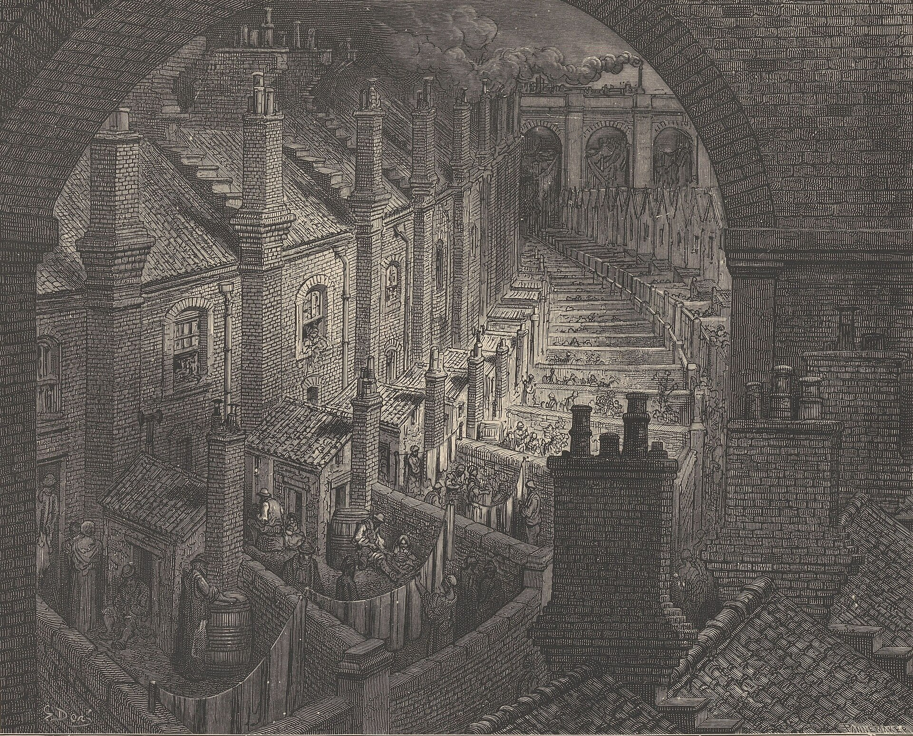
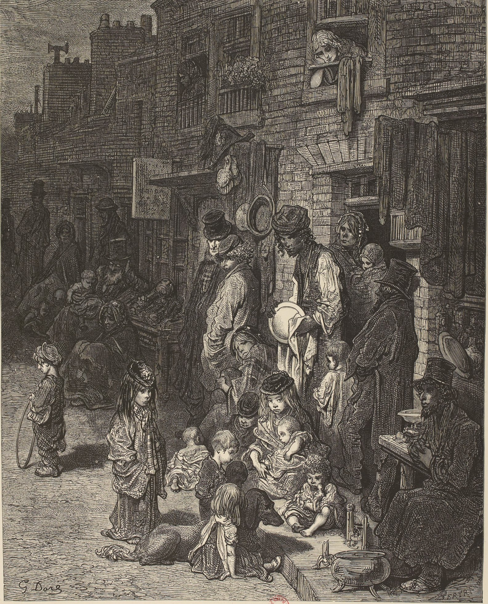
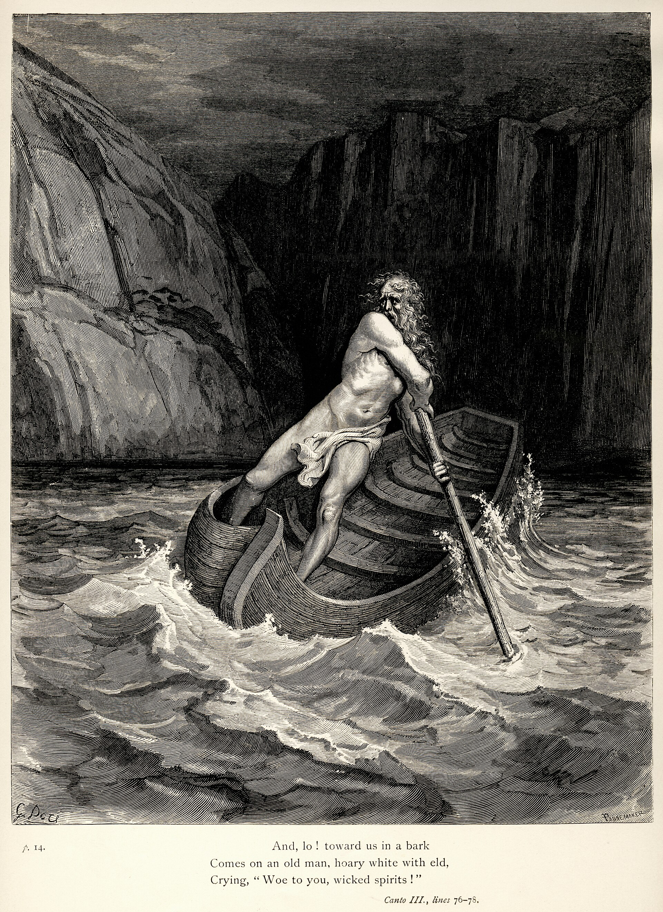
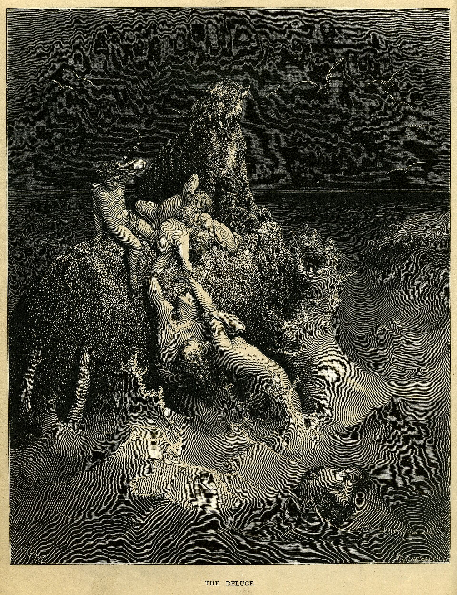

Hysteria
A Lord of the Mysteries roleplay community. Explore Beyonder pathways, learn the systems, and join Hysteria on Discord.
Join Hysteria on Discord (opens in a new tab)
Explore the three worlds
A colourless street. An open door. Somewhere between the familiar and the impossible, your story begins.
The Physical World has its laws. The Spirit World carries revelations. In the Astral World, symbols become reality. Learn where the boundaries lie before you cross them.
Read the worldPower has a name
Every pathway begins with a potion.
What comes after depends on you.

Begin at Sequence 9. Read what your first potion changes.
Seer
Sequence 9 · Fool pathway
Enhanced memory, heightened spirituality, Spirit Vision and an intuition for danger. Divination is a talent you must still learn to use.
Read the Seer abilitiesBecome the role
Power follows understanding. Your Sequence is a role to embody.
Find your principles
Write your own interpretation. Demonstrate it through your choices.
Record the resonance
Completed roleplays can earn 1–3 Resonance Points through meaningful Acting.
Know when to advance
Fulfil every digestion requirement before taking the next potion.
Read the Acting Method
Keep your anchor
Power has a cost. Sanity is the measure of how much of yourself remains.
Stable
80–95. A normal, functioning state. The usual natural recovery cap is 95.
A roleplay reference. Your character’s values are recorded separately.
The forbidden archive
The world, its powers, and the rules that hold it together. Read with care.
Opening the collection…
Browse the full archiveJoin Hysteria
Meet the community behind A World in Three. Read the server’s rules, ask about character creation, and find your place in the roleplay.
Join Discord (opens in a new tab)The live server widget is provided by Discord. If it does not load, the join link opens the server invitation directly.
Cross the threshold
Start with the world. Choose a pathway.
Read the systems before your first scene.